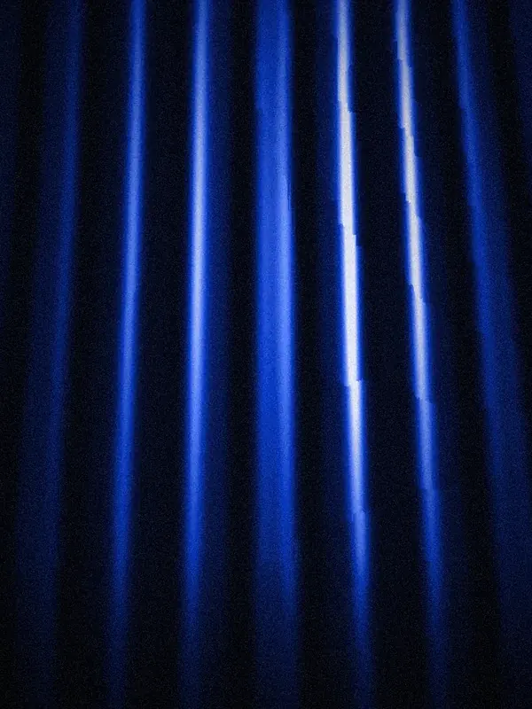

Чёрный кадр в кинорамке, свет «Рампа» снизу. Под надписью «Ticket to Show — билеты без кассовых сборов» ложатся афиши. Отсчёт и колода идут вслед за реальной загрузкой страницы. В конце верхняя афиша перелетает в постер первого экрана.
Нажмите, чтобы проиграть заставку ещё раз. На этой странице кадры колоды — атмосферные кадры сцены, на сайте вместо них афиши событий.

tts-intro.js — заставка целиком: стили, разметка, логика. Внешних зависимостей нет.index.html — эта страница: пример и документация.site/home-new.html, кадры сцены для запасного варианта — site/home-new/.Скрипт ставится сразу после открывающего <body>, до остальной разметки: заставка закрывает первый кадр, и страница под ней не мелькает.
<body>
<script src="/assets/tts-intro.js"></script>
<script>
TTSIntro.start({
images: [ /* афиши сайта, сколько есть; последняя — событие первого экрана */ ],
fallbacks: [ /* запасные кадры на случай, если афиша не загрузилась */ ],
poster: '.hero-poster', // постер первого экрана — туда перелетает верхняя афиша
tickets: '#afisha', // куда ведёт «К билетам»
meta: 'Москва · сезон 2026/27',
onReveal: () => document.documentElement.classList.add('page-in'), // проявить первый экран
onPoster: () => document.documentElement.classList.add('poster-in'), // показать постер под прилетевшей афишей
});
</script>
…| Параметр | Что это | По умолчанию |
|---|---|---|
images | Адреса афиш. В колоду идут не больше семи: первые шесть из списка и последняя (она станет постером). Медленное движение спокойнее для глаза: в длинной версии афиша ложится раз в 0,9 с, колода — около 5,5 с, буквы надписи меняются 2–3 раза с шагом 170 мс; в обычной колода — 1,5 с. Карточка 3:4, широкая афиша обрезается по краям. Пока колода листается, рамка карточки серая (--n800); кобальтовая проявляется только у последней афиши, пока та летит в постер. | — |
fallbacks | Запасные картинки по тем же номерам: подставляются, если афиша не загрузилась. | — |
poster | Селектор постера первого экрана. Если его нет на экране (на телефоне постер скрыт), афиша просто гаснет. | — |
tickets | Селектор блока, к которому прокручивает кнопка «К билетам». | — |
meta | Подпись справа в нижней рамке. На телефоне скрыта. | пусто |
goLabel | Текст кнопки в нижней рамке. | «К билетам» |
mode | 'long', 'short' или 'skip' — сыграть именно так. | 'long' |
onReset | Вызывается перед повтором (TTSIntro.replay()): спрятать первый экран обратно, чтобы он проявился заново. | — |
onReveal | Вызывается, когда рамка раскрывается: пора проявлять первый экран. | — |
onPoster | Вызывается, когда афиша долетела до постера: показать постер под ней. | — |
onDone | Заставка убрана, прокрутка разблокирована. | — |
Если заставка не играет, onReveal, onPoster и onDone вызываются сразу, поэтому первый экран проявляется так же, без задержки.
| Ситуация | Что видит человек |
|---|---|
| Каждая загрузка страницы | Длинная версия. Колода из семи афиш, афиша ложится раз в 0,9 с; всего около 9 с вместе с переходом. |
?intro=short | Короткая версия. Отсчёт и колода идут вслед за реальной загрузкой, около 3 с. |
?intro=0 | Не играет. Страница показывается сразу. |
| Включено «Уменьшение движения» | Без движения: готовый кадр примерно на 1,2 с, затем он плавно гаснет. |
Повтор. TTSIntro.replay() играет заставку ещё раз с теми же настройками: страница уходит наверх, onReset прячет первый экран, дальше — как при загрузке. В макетах главной — кнопка «Повторить заставку» (в варианте с плитками — «Заставка» в панели вариантов).
Запоминания показа в скрипте нет. Заставка играет при каждой загрузке. Если на сайте нужно «один раз за визит» или «короче при повторном визите», это делается на стороне сайта: например, отметка в sessionStorage / localStorage и вызов TTSIntro.start с mode: 'skip' или 'short'.
Кадр можно пропустить: клик по нему, Esc, Enter или пробел. Кнопка «К билетам» пропускает и прокручивает к блоку tickets.
ds-core-r14.css): цвета и шрифты берутся из токенов --ink, --n100…--n950, --accent, --rampa-violet, --font, --f-thin, --f-num, --page-pad.family=Cormorant+Garamond:ital,wght@0,400;0,500;1,400&family=Oranienbaum&family=Forum&family=Manrope:wght@200;300;400;500;600;700img-src. Иначе встанут запасные кадры.Размер надписи считает браузер, без скрипта: от ширины колонки и высоты окна между рамками. Самая длинная строка занимает всю ширину, все строки помещаются по высоте. Наборов строк два: три строки на широком экране и пять на узком (до 767 px). Какой показать, тоже решает CSS. Так надпись верная, даже если окно поменяло размер уже после запуска — например, во встроенном просмотрщике на телефоне.
Если меняется текст надписи, нужно перемерить две константы в правиле .ti-head: ширину самой длинной строки в em (сейчас 9.36, на узком экране 5.62) и высоту набора строк в em (3.3 и 5.55). Колонка задана отступами слева и справа, а не шириной через переменную: Safari такую ширину не применял, и надпись уезжала вправо.
Проверено на экранах 360×740, 375×560, 390×664, 390×844, 768×1024, 844×390, 1280×640, 1440×900 и 1920×1080: надпись везде в колонке и между рамками.
role="dialog" с подписью «Ticket to Show — билеты без кассовых сборов». Надпись и колода скрыты от читалок, чтобы перебор букв не зачитывался.